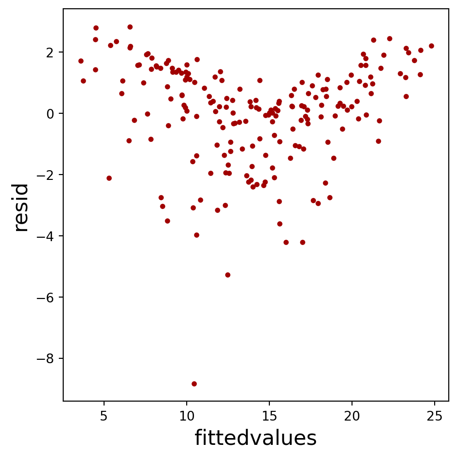

pip install statsmodels scikit-learn Linear Models
前言
在 Python 中，statsmodels 和 scikit-learn 是兩個常用於迴歸分析的套件，但各自有不同的設計理念、功能和使用方式。
statsmodels 以統計學為核心，強調統計推論與模型診斷。statsmodels 提供詳細的統計檢定工具，除了計算迴歸係數，還支持詳細的假設檢定、信賴區間、異方差檢驗、自相關檢驗等，用於推論和模型診斷。在套件使用上，使用者需要明確指定模型（如 OLS 或 Logit），並使用 .fit() 方法來建立模型，模型擬合後，可透過 .summary() 輸出結果物件，其內容包含豐富的統計資料，如 平方值、係數估計、標準誤差、 檢定的 值、95% 信賴區間等，並可使用 .predict() 進行預測。
scikit-learn 以機器學習為核心，不提供統計檢定或模型診斷功能，主要側重於模型的準確性、精度和其他預測性能評估，較適用於大規模的數據處理和預測問題。除了迴歸分析，scikit-learn 還提供了大量機器學習方法，包括各種迴歸器與分類器、聚類分析、數據降維等功能。在套件使用上，scikit-learn 的 API 非常統一且簡單，使用者只需導入對應的模型（如 LinearRegression 或 LogisticRegression），使用 .fit() 方法來訓練模型，並通過 .predict() 進行預測。
在開始之前，請確保你安裝了必要的 Python 套件，如 statsmodels 和 scikit-learn。你可以使用以下命令安裝：
迴歸模型 Python 示範
首先，我們需要匯入分析和繪圖所需的套件。
# 匯入必要的套件
import os # 用於作業系統相關的操作
import pandas as pd # 用於處理和分析資料的資料框架工具
import numpy as np # 用於數學計算，特別是陣列處理
from matplotlib import pyplot as plt # 用於繪製圖表接下來，我們讀取範例 CSV 檔案，這份檔案包含了不同廣告費用（TV、radio、newspaper）對銷售額（sales）的影響。這是我們的資料集，會用來進行後續的迴歸建模示範。
# 從網路讀取 CSV 檔案並載入至 pandas DataFrame
adv_df = pd.read_csv('https://raw.githubusercontent.com/PingYangChen/DS-pytutorial/refs/heads/main/sample_data/Advertising.csv')
# 顯示資料集的前 5 行
adv_df.head(5)
# 計算資料集的總行數
len(adv_df)
# 儲存資料集中的欄位名稱
adv_var = adv_df.columns
# 顯示 TV、radio 和 newspaper 的統計摘要（不包含第一個欄位）
adv_df[adv_var[1:]].describe()| TV | radio | newspaper | sales | |
|---|---|---|---|---|
| count | 200.000000 | 200.000000 | 200.000000 | 200.000000 |
| mean | 147.042500 | 23.264000 | 30.554000 | 14.022500 |
| std | 85.854236 | 14.846809 | 21.778621 | 5.217457 |
| min | 0.700000 | 0.000000 | 0.300000 | 1.600000 |
| 25% | 74.375000 | 9.975000 | 12.750000 | 10.375000 |
| 50% | 149.750000 | 22.900000 | 25.750000 | 12.900000 |
| 75% | 218.825000 | 36.525000 | 45.100000 | 17.400000 |
| max | 296.400000 | 49.600000 | 114.000000 | 27.000000 |
接下來，我們會用 matplotlib 繪製圖表，將 TV、radio 和 newspaper 的廣告費用與銷售額進行視覺化分析。這有助於我們理解不同變數之間的關係。
# 這段程式碼會生成一組圖表，用來顯示 TV、radio 和 newspaper 廣告費用與銷售額之間的關係。這有助於直觀地觀察變數之間的相關性。
# 建立圖表，設置大小為12x5英吋
fig = plt.figure(figsize=(8, 3))
# 在第一個子圖中繪製 TV 廣告費用與銷售額的關係圖
ax = plt.subplot(1, 3, 1)
ax.plot(adv_df['TV'], adv_df['sales'], marker='.', linestyle='', color='#A00000') # 繪製散點圖
ax.set_xlabel("TV", fontsize=14) # 設置X軸標籤
ax.set_ylabel("sales", fontsize=14) # 設置Y軸標籤
# 在第二個子圖中繪製 radio 廣告費用與銷售額的關係圖
ax = plt.subplot(1, 3, 2)
ax.plot(adv_df['radio'], adv_df['sales'], marker='.', linestyle='', color='#A00000')
ax.set_xlabel("radio", fontsize=14)
ax.set_ylabel("sales", fontsize=14)
# 在第三個子圖中繪製 newspaper 廣告費用與銷售額的關係圖
ax = plt.subplot(1, 3, 3)
ax.plot(adv_df['newspaper'], adv_df['sales'], marker='.', linestyle='', color='#A00000')
ax.set_xlabel("newspaper", fontsize=14)
ax.set_ylabel("sales", fontsize=14)
# 自動調整子圖間的間距
fig.tight_layout()
# 顯示圖表
fig.show()
簡單線性迴歸模型 Simple Linear Regression
以 statsmodels 建立簡單線性迴歸模型
首先，我們用 statsmodels 進行統計建模，學習 statsmodels 的使用方式。首先，將目標變數 sales 存儲為變數 y。
# 匯入 statsmodels 用於統計建模
import statsmodels.api as sm
# 將 'sales' 欄位的值存為目標變數 y
y = adv_df['sales']接下來，我們要進行簡單線性迴歸分析。將 TV 廣告費用作為自變數，並嘗試建立一個迴歸模型。
# 將 'TV' 欄位的值存為自變數 x1
x1 = adv_df[['TV']]我們將使用 statsmodels 進行線性迴歸，並生成模型的摘要，這將告訴我們模型的參數和統計顯著性。
# 使用 statsmodels 進行簡單線性迴歸，並建立模型
slr_sm = sm.OLS(y, sm.add_constant(x1)).fit()
# 顯示迴歸模型摘要
slr_sm.summary()| Dep. Variable: | sales | R-squared: | 0.612 |
| Model: | OLS | Adj. R-squared: | 0.610 |
| Method: | Least Squares | F-statistic: | 312.1 |
| Date: | Thu, 24 Oct 2024 | Prob (F-statistic): | 1.47e-42 |
| Time: | 22:42:03 | Log-Likelihood: | -519.05 |
| No. Observations: | 200 | AIC: | 1042. |
| Df Residuals: | 198 | BIC: | 1049. |
| Df Model: | 1 | ||
| Covariance Type: | nonrobust |
| coef | std err | t | P>|t| | [0.025 | 0.975] | |
| const | 7.0326 | 0.458 | 15.360 | 0.000 | 6.130 | 7.935 |
| TV | 0.0475 | 0.003 | 17.668 | 0.000 | 0.042 | 0.053 |
| Omnibus: | 0.531 | Durbin-Watson: | 1.935 |
| Prob(Omnibus): | 0.767 | Jarque-Bera (JB): | 0.669 |
| Skew: | -0.089 | Prob(JB): | 0.716 |
| Kurtosis: | 2.779 | Cond. No. | 338. |
Notes:
[1] Standard Errors assume that the covariance matrix of the errors is correctly specified.
我們將繪製一個 Q-Q 圖（Quantile-Quantile plot），用來檢查簡單線性迴歸模型的殘差是否符合常態分佈。如果數據點沿著對角線分佈，則表明殘差符合常態性假設。
# 繪製 Q-Q 圖（Quantile-Quantile plot），用來檢查殘差是否符合常態分佈
fig = sm.qqplot(slr_sm.resid, fit=True, line="45")
fig.show()
繪製模型的擬合值與殘差之間的關係圖。這個圖表有助於檢查模型的殘差是否具有隨機分佈。理想情況下，殘差應該均勻分佈在零附近，沒有明顯的模式。
# 繪製模型的擬合值與殘差之間的關係圖，用於檢查模型的殘差
fig = plt.figure(figsize=(5, 5))
ax = plt.subplot(1, 1, 1)
ax.plot(slr_sm.fittedvalues, slr_sm.resid, marker='.', linestyle='', color='#A00000')
ax.set_xlabel("fittedvalues", fontsize=16) # 設置X軸標籤為擬合值
ax.set_ylabel("resid", fontsize=16) # 設置Y軸標籤為殘差
fig.tight_layout()
fig.show()
het_breuschpagan 是一種檢查異質變異性的檢定方法。如果模型的殘差具有異質變異性，表示模型不符合假設。 檢定結果會包括四個值，依序分別是：Lagrange Multiplier (LM) 檢定統計量、LM p 值、F 檢定統計量、F p 值。 以下結果顯示 F 檢定統計量的 p 值極小，表示殘差具有異質變異性。
# 進行 Breusch-Pagan 檢定，用來檢查殘差的異質變異性
# 異質變異性指的是殘差的變異是否隨自變數的變化而改變，如果殘差的變異不一致，模型可能不適合。
slr_bptest = sm.stats.diagnostic.het_breuschpagan(slr_sm.resid, sm.add_constant(x1))
# 輸出 Breusch-Pagan 檢定結果
print(slr_bptest)(np.float64(48.037965662293594), np.float64(4.180455907755742e-12), np.float64(62.591404771514256), np.float64(1.7618451425695244e-13))更多線性模型診斷之統計檢定可參考 https://www.statsmodels.org/stable/stats.html#module-statsmodels.stats.stattools
這段程式碼用來預測一個新的觀察值，其 TV 廣告費用為 100000。透過多元線性迴歸模型，我們可以根據這個新的 TV 廣告費用數據，預測對應的銷售額。
# 預測一個新的觀察值，廣告費用分別是 TV: 100000
x_new = pd.DataFrame(data=[{'const': 1, 'TV': 100000}])
# 使用多元線性迴歸模型進行預測
slr_sm.predict(x_new)0 4760.696637
dtype: float64我們可以進一步查看預測的詳細結果，包含預測值的區間範圍等。
# 獲取預測的詳細結果
slr_sm_pred = slr_sm.get_prediction(x_new)
slr_sm_pred.summary_frame()| mean | mean_se | mean_ci_lower | mean_ci_upper | obs_ci_lower | obs_ci_upper | |
|---|---|---|---|---|---|---|
| 0 | 4760.696637 | 268.665184 | 4230.884198 | 5290.509075 | 4230.845228 | 5290.548045 |
以 scikit-learn 建立簡單線性迴歸模型
現在，我們切換到使用 scikit-learn 進行線性迴歸，首先，匯入 LinearRegression。
# 使用 sklearn 進行線性迴歸
from sklearn.linear_model import LinearRegression同樣，我們定義自變數和目標變數，這裡我們使用 TV 廣告費用作為自變數，銷售額作為目標變數。
# 自變數為 TV, radio 和 newspaper
x = adv_df[['TV']]
# 目標變數為 sales
y = adv_df['sales']建立線性迴歸模型並進行擬合，這會訓練模型來預測銷售額。
# 建立線性迴歸模型
slr_sk = LinearRegression(fit_intercept=True)
# 使用 sklearn 進行模型擬合
slr_sk.fit(x, y)LinearRegression()In a Jupyter environment, please rerun this cell to show the HTML representation or trust the notebook.
On GitHub, the HTML representation is unable to render, please try loading this page with nbviewer.org.
LinearRegression()
我們可以獲取模型的截距和每個變數的係數，這些係數告訴我們每增加一單位 TV 廣告費用時，銷售額的變化量。
# 獲取截距項
print(slr_sk.intercept_)
# 獲取迴歸係數
print(slr_sk.coef_)7.032593549127695
[0.04753664]最後，我們使用 sklearn 模型來預測同樣的新觀察值（TV: 100000），並查看預測結果。
# 預測一個新的觀察值，廣告費用分別是 TV: 100000
x_new = pd.DataFrame(data=[{'TV': 100000}])
# 使用多元線性迴歸模型進行預測
slr_sk.predict(x_new)array([4760.69663685])複迴歸模型 Multiple Linear Regression
以 statsmodels 建立複迴歸模型
現在，我們進行多元線性迴歸。這次我們使用 TV、radio 和 newspaper 廣告費用作為自變數，來預測銷售額。
# 進行多元線性迴歸，將 TV、radio 和 newspaper 的廣告費用設為自變數
x = adv_df[['TV', 'radio', 'newspaper']]建立多元線性迴歸模型，並顯示模型的摘要來檢查所有自變數對銷售額的影響。
# 建立多元線性迴歸模型
mlr_sm = sm.OLS(y, sm.add_constant(x)).fit()
# 顯示多元線性迴歸模型摘要
mlr_sm.summary()| Dep. Variable: | sales | R-squared: | 0.897 |
| Model: | OLS | Adj. R-squared: | 0.896 |
| Method: | Least Squares | F-statistic: | 570.3 |
| Date: | Thu, 24 Oct 2024 | Prob (F-statistic): | 1.58e-96 |
| Time: | 22:42:04 | Log-Likelihood: | -386.18 |
| No. Observations: | 200 | AIC: | 780.4 |
| Df Residuals: | 196 | BIC: | 793.6 |
| Df Model: | 3 | ||
| Covariance Type: | nonrobust |
| coef | std err | t | P>|t| | [0.025 | 0.975] | |
| const | 2.9389 | 0.312 | 9.422 | 0.000 | 2.324 | 3.554 |
| TV | 0.0458 | 0.001 | 32.809 | 0.000 | 0.043 | 0.049 |
| radio | 0.1885 | 0.009 | 21.893 | 0.000 | 0.172 | 0.206 |
| newspaper | -0.0010 | 0.006 | -0.177 | 0.860 | -0.013 | 0.011 |
| Omnibus: | 60.414 | Durbin-Watson: | 2.084 |
| Prob(Omnibus): | 0.000 | Jarque-Bera (JB): | 151.241 |
| Skew: | -1.327 | Prob(JB): | 1.44e-33 |
| Kurtosis: | 6.332 | Cond. No. | 454. |
Notes:
[1] Standard Errors assume that the covariance matrix of the errors is correctly specified.
這段程式碼會繪製 Q-Q 圖（Quantile-Quantile plot）來檢查多元線性迴歸模型的殘差是否符合常態分佈。如果數據點沿對角線排列，表示殘差符合常態性假設。接著，程式碼會繪製模型的擬合值與殘差之間的關係圖，用來檢查模型的擬合效果。理想情況下，殘差應該隨機分佈，沒有明顯的模式，這樣可以確認模型的適配性。
# 繪製多元線性迴歸模型的 Q-Q 圖來檢查殘差是否符合常態分佈
fig = sm.qqplot(mlr_sm.resid, fit=True, line="45")
fig.show()
# 繪製多元線性迴歸模型的擬合值與殘差的關係圖
fig = plt.figure(figsize=(5, 5))
ax = plt.subplot(1, 1, 1)
ax.plot(mlr_sm.fittedvalues, mlr_sm.resid, marker='.', linestyle='', color='#A00000')
ax.set_xlabel("fittedvalues", fontsize=16)
ax.set_ylabel("resid", fontsize=16)
fig.tight_layout()
fig.show()

接著，我們嘗試預測一個新的觀察值，假設某個新的廣告費用分配（TV: 100000、radio: 20000、newspaper: 1000），我們將使用模型來預測銷售額。
# 預測一個新的觀察值，廣告費用分別是 TV: 100000, radio: 20000, newspaper: 1000
x_new = pd.DataFrame(data=[{'const': 1, 'TV': 100000, 'radio': 20000, 'newspaper': 1000}])
# 使用多元線性迴歸模型進行預測
mlr_sm.predict(x_new)0 8348.96628
dtype: float64我們可以進一步查看預測的詳細結果，包含預測值的區間範圍等。
# 獲取預測的詳細結果
mlr_sm_pred = mlr_sm.get_prediction(x_new)
mlr_sm_pred.summary_frame()| mean | mean_se | mean_ci_lower | mean_ci_upper | obs_ci_lower | obs_ci_upper | |
|---|---|---|---|---|---|---|
| 0 | 8348.96628 | 215.612681 | 7923.747624 | 8774.184937 | 7923.734631 | 8774.197929 |
在 statsmodels 下進行資料前處理
除了將各資料欄位作為自變數外，可對變數做各種轉換使之成為新變數，例如取兩個變數的 交互作用 作為新的自變數。
這段程式碼使用 deepcopy 將 TV 和 radio 欄位複製到一個新的資料框 x2fi，並新增一個交互作用項 TV:radio，這個項是 TV 和 radio 廣告費用的乘積。這個交互作用項用來檢查兩個變數之間的聯合效果是否對銷售額有額外的影響。
# 從 copy 模組中匯入 deepcopy 函數，用來做資料的深拷貝
from copy import deepcopy
# 使用 deepcopy 將 'TV' 和 'radio' 欄位從 adv_df 資料框中複製到 x2fi
# 深拷貝確保拷貝後的資料框與原始資料框是獨立的，修改 x2fi 不會影響 adv_df
x2fi = deepcopy(adv_df[['TV', 'radio']])
# 新增一個交互作用項 'TV:radio'，這項是 TV 和 radio 廣告費用的乘積，用於檢查它們之間的交互作用
x2fi['TV:radio'] = x2fi['TV'] * x2fi['radio']
print(x2fi.head(5)) TV radio TV:radio
0 230.1 37.8 8697.78
1 44.5 39.3 1748.85
2 17.2 45.9 789.48
3 151.5 41.3 6256.95
4 180.8 10.8 1952.64這段程式碼使用 statsmodels 建立一個包含 TV、radio 和它們交互作用項的多元線性迴歸模型。透過這個模型，我們可以檢查這些變數及其交互作用對銷售額的影響。最後顯示模型的統計摘要，來評估各變數的顯著性和模型的擬合度。
# 使用 statsmodels 進行多元線性迴歸分析，其中包含 TV、radio 和它們的交互作用項
# sm.add_constant() 用來在模型中加入常數項（截距）
# 建立包含交互作用項的線性迴歸模型，並進行擬合
lr2fi_sm = sm.OLS(y, sm.add_constant(x2fi)).fit()
# 顯示包含交互作用項的回歸模型的統計摘要
lr2fi_sm.summary()| Dep. Variable: | sales | R-squared: | 0.968 |
| Model: | OLS | Adj. R-squared: | 0.967 |
| Method: | Least Squares | F-statistic: | 1963. |
| Date: | Thu, 24 Oct 2024 | Prob (F-statistic): | 6.68e-146 |
| Time: | 22:42:04 | Log-Likelihood: | -270.14 |
| No. Observations: | 200 | AIC: | 548.3 |
| Df Residuals: | 196 | BIC: | 561.5 |
| Df Model: | 3 | ||
| Covariance Type: | nonrobust |
| coef | std err | t | P>|t| | [0.025 | 0.975] | |
| const | 6.7502 | 0.248 | 27.233 | 0.000 | 6.261 | 7.239 |
| TV | 0.0191 | 0.002 | 12.699 | 0.000 | 0.016 | 0.022 |
| radio | 0.0289 | 0.009 | 3.241 | 0.001 | 0.011 | 0.046 |
| TV:radio | 0.0011 | 5.24e-05 | 20.727 | 0.000 | 0.001 | 0.001 |
| Omnibus: | 128.132 | Durbin-Watson: | 2.224 |
| Prob(Omnibus): | 0.000 | Jarque-Bera (JB): | 1183.719 |
| Skew: | -2.323 | Prob(JB): | 9.09e-258 |
| Kurtosis: | 13.975 | Cond. No. | 1.80e+04 |
Notes:
[1] Standard Errors assume that the covariance matrix of the errors is correctly specified.
[2] The condition number is large, 1.8e+04. This might indicate that there are
strong multicollinearity or other numerical problems.
另外一種常用的變數變換方式為 encoding，針對類別型的欄位予以編碼，使其轉換為數值型的虛擬變數（dummy variables）以納入迴歸模型分析。
我們以信用卡持有人資料的 Credit.csv 檔案進行示範。首先對多個分類變數（如 Own、Region、Student）進行虛擬變數轉換（dummy encoding），並對其影響信用卡餘額（Balance）的作用進行檢驗。最後，再加入數值型變數與虛擬變數的交互作用項進行迴歸分析，檢查收入（income）與學生身份（Student）的聯合效果。
這段程式碼從網路讀取信用卡持有人資料的 Credit.csv 資料集，並顯示資料的前 5 行。接著計算資料的總行數並顯示各欄位的統計摘要，這有助於我們了解資料的基本結構，如信用卡餘額、收入和年齡等變數的分佈。
# 從網路讀取 Credit 資料集並載入至 pandas DataFrame
cre_df = pd.read_csv('https://raw.githubusercontent.com/PingYangChen/DS-pytutorial/refs/heads/main/sample_data/Credit.csv')
# 顯示資料集的前 5 行
cre_df.head(5)
# 計算資料集的總行數
len(cre_df)
# 儲存資料集中的欄位名稱
cre_var = cre_df.columns
# 顯示 Balance、Income、Age 等欄位的統計摘要（不包括第一個欄位 'ID'）
cre_df[cre_var[1:]].describe()| Limit | Rating | Cards | Age | Education | Balance | |
|---|---|---|---|---|---|---|
| count | 400.000000 | 400.000000 | 400.000000 | 400.000000 | 400.000000 | 400.000000 |
| mean | 4735.600000 | 354.940000 | 2.957500 | 55.667500 | 13.450000 | 520.015000 |
| std | 2308.198848 | 154.724143 | 1.371275 | 17.249807 | 3.125207 | 459.758877 |
| min | 855.000000 | 93.000000 | 1.000000 | 23.000000 | 5.000000 | 0.000000 |
| 25% | 3088.000000 | 247.250000 | 2.000000 | 41.750000 | 11.000000 | 68.750000 |
| 50% | 4622.500000 | 344.000000 | 3.000000 | 56.000000 | 14.000000 | 459.500000 |
| 75% | 5872.750000 | 437.250000 | 4.000000 | 70.000000 | 16.000000 | 863.000000 |
| max | 13913.000000 | 982.000000 | 9.000000 | 98.000000 | 20.000000 | 1999.000000 |
這段程式碼將 ‘Balance’（信用卡餘額）設為目標變數 y，後續的迴歸模型將用來預測這個變數的值。
# 設定目標變數 y 為 'Balance' 欄位（信用卡餘額）
y = cre_df['Balance']這段程式碼使用 pd.get_dummies 將 Own 這個分類變數轉換為虛擬變數，表示是否擁有房屋。這樣我們就能在迴歸分析中使用該變數來預測信用卡餘額。最後顯示轉換後資料框中的欄位名稱，確認虛擬變數轉換是否成功。
# 設定目標變數 y 為 'Balance' 欄位（信用卡餘額）
y = cre_df['Balance']
# 使用 pd.get_dummies 將分類變數 'Own' 轉換為虛擬變數（dummy variables），只保留一個類別 'Own_Yes'
cre_df_dummy = pd.get_dummies(cre_df, columns=['Own'], drop_first=True, dtype=int)
# 顯示轉換後資料框中的欄位名稱
print(cre_df_dummy.columns)
# 顯示轉換後資料框中的前 5 行
print(cre_df_dummy.head(5))Index(['Income', 'Limit', 'Rating', 'Cards', 'Age', 'Education', 'Student',
'Married', 'Region', 'Balance', 'Own_Yes'],
dtype='object')
Income Limit Rating Cards Age Education Student Married Region \
0 14.891 3606 283 2 34 11 No Yes South
1 106.025 6645 483 3 82 15 Yes Yes West
2 104.593 7075 514 4 71 11 No No West
3 148.924 9504 681 3 36 11 No No West
4 55.882 4897 357 2 68 16 No Yes South
Balance Own_Yes
0 333 0
1 903 1
2 580 0
3 964 1
4 331 0 這段程式碼使用 Own_Yes（是否擁有房屋）作為自變數，建立線性迴歸模型來預測信用卡餘額。模型擬合後，顯示統計摘要，檢查是否擁有房屋對信用卡餘額的影響。
# 設定自變數 x 為 'Own_Yes'，表示是否擁有房屋
x = cre_df_dummy[['Own_Yes']]
# 建立線性迴歸模型並進行擬合，使用自變數 'Own_Yes' 預測 'Balance'
slr_sm = sm.OLS(y, sm.add_constant(x)).fit()
# 顯示線性迴歸模型的統計摘要，包含係數估計和模型統計信息
slr_sm.summary()| Dep. Variable: | Balance | R-squared: | 0.000 |
| Model: | OLS | Adj. R-squared: | -0.002 |
| Method: | Least Squares | F-statistic: | 0.1836 |
| Date: | Thu, 24 Oct 2024 | Prob (F-statistic): | 0.669 |
| Time: | 22:42:05 | Log-Likelihood: | -3019.3 |
| No. Observations: | 400 | AIC: | 6043. |
| Df Residuals: | 398 | BIC: | 6051. |
| Df Model: | 1 | ||
| Covariance Type: | nonrobust |
| coef | std err | t | P>|t| | [0.025 | 0.975] | |
| const | 509.8031 | 33.128 | 15.389 | 0.000 | 444.675 | 574.931 |
| Own_Yes | 19.7331 | 46.051 | 0.429 | 0.669 | -70.801 | 110.267 |
| Omnibus: | 28.438 | Durbin-Watson: | 1.940 |
| Prob(Omnibus): | 0.000 | Jarque-Bera (JB): | 27.346 |
| Skew: | 0.583 | Prob(JB): | 1.15e-06 |
| Kurtosis: | 2.471 | Cond. No. | 2.66 |
Notes:
[1] Standard Errors assume that the covariance matrix of the errors is correctly specified.
這段程式碼使用 pd.get_dummies 將 ‘Region’ 分區變數轉換為虛擬變數，並使用 Region_South 和 Region_West 作為自變數，檢查不同區域對信用卡餘額的影響。最後顯示模型的統計摘要來檢查各區域的影響力。
# 使用 pd.get_dummies 將分類變數 'Region' 轉換為虛擬變數，包含 'Region_South' 和 'Region_West'
cre_df_dummy = pd.get_dummies(cre_df, columns=['Region'], drop_first=True, dtype=int)
# 設定自變數 x 為 'Region_South' 和 'Region_West'，分別表示來自南部和西部的地區
x = cre_df_dummy[['Region_South', 'Region_West']]
# 使用線性迴歸模型來檢驗區域對信用卡餘額的影響
slr_sm = sm.OLS(y, sm.add_constant(x)).fit()
# 顯示區域變數對信用卡餘額影響的迴歸模型統計摘要
slr_sm.summary()| Dep. Variable: | Balance | R-squared: | 0.000 |
| Model: | OLS | Adj. R-squared: | -0.005 |
| Method: | Least Squares | F-statistic: | 0.04344 |
| Date: | Thu, 24 Oct 2024 | Prob (F-statistic): | 0.957 |
| Time: | 22:42:05 | Log-Likelihood: | -3019.3 |
| No. Observations: | 400 | AIC: | 6045. |
| Df Residuals: | 397 | BIC: | 6057. |
| Df Model: | 2 | ||
| Covariance Type: | nonrobust |
| coef | std err | t | P>|t| | [0.025 | 0.975] | |
| const | 531.0000 | 46.319 | 11.464 | 0.000 | 439.939 | 622.061 |
| Region_South | -12.5025 | 56.681 | -0.221 | 0.826 | -123.935 | 98.930 |
| Region_West | -18.6863 | 65.021 | -0.287 | 0.774 | -146.515 | 109.142 |
| Omnibus: | 28.829 | Durbin-Watson: | 1.946 |
| Prob(Omnibus): | 0.000 | Jarque-Bera (JB): | 27.395 |
| Skew: | 0.581 | Prob(JB): | 1.13e-06 |
| Kurtosis: | 2.460 | Cond. No. | 4.39 |
Notes:
[1] Standard Errors assume that the covariance matrix of the errors is correctly specified.
這段程式碼將 Student 變數轉換為虛擬變數 Student_Yes，用來表示是否為學生。接著，使用收入（Income）和學生身份（Student_Yes）作為自變數，建立線性迴歸模型來預測信用卡餘額。最後顯示回歸模型的統計摘要，以檢查收入和學生身份對信用卡餘額的影響。
# 使用 pd.get_dummies 將分類變數 'Student' 轉換為虛擬變數，保留 'Student_Yes'
cre_df_dummy = pd.get_dummies(cre_df, columns=['Student'], drop_first=True, dtype=int)
# 設定自變數 x 為 'Income' 和 'Student_Yes'，檢查收入和是否為學生對信用卡餘額的影響
x = cre_df_dummy[['Income', 'Student_Yes']]
# 建立線性迴歸模型，使用收入和是否為學生預測信用卡餘額
lr_main_sm = sm.OLS(y, sm.add_constant(x)).fit()
# 顯示收入和學生身份對信用卡餘額影響的迴歸模型統計摘要
lr_main_sm.summary()| Dep. Variable: | Balance | R-squared: | 0.277 |
| Model: | OLS | Adj. R-squared: | 0.274 |
| Method: | Least Squares | F-statistic: | 76.22 |
| Date: | Thu, 24 Oct 2024 | Prob (F-statistic): | 9.64e-29 |
| Time: | 22:42:05 | Log-Likelihood: | -2954.4 |
| No. Observations: | 400 | AIC: | 5915. |
| Df Residuals: | 397 | BIC: | 5927. |
| Df Model: | 2 | ||
| Covariance Type: | nonrobust |
| coef | std err | t | P>|t| | [0.025 | 0.975] | |
| const | 211.1430 | 32.457 | 6.505 | 0.000 | 147.333 | 274.952 |
| Income | 5.9843 | 0.557 | 10.751 | 0.000 | 4.890 | 7.079 |
| Student_Yes | 382.6705 | 65.311 | 5.859 | 0.000 | 254.272 | 511.069 |
| Omnibus: | 119.719 | Durbin-Watson: | 1.951 |
| Prob(Omnibus): | 0.000 | Jarque-Bera (JB): | 23.617 |
| Skew: | 0.252 | Prob(JB): | 7.44e-06 |
| Kurtosis: | 1.922 | Cond. No. | 192. |
Notes:
[1] Standard Errors assume that the covariance matrix of the errors is correctly specified.
以 scikit-learn 建立複迴歸模型
現在，我們切換到使用 sklearn 進行線性迴歸，首先匯入 LinearRegression。
# 使用 sklearn 進行線性迴歸
from sklearn.linear_model import LinearRegression同樣，我們定義自變數和目標變數，這裡我們使用 TV、radio 和 newspaper 廣告費用作為自變數，銷售額作為目標變數。
# 自變數為 TV, radio 和 newspaper
x = adv_df[['TV', 'radio', 'newspaper']]
# 目標變數為 sales
y = adv_df['sales']建立線性迴歸模型並進行擬合，這會訓練模型來預測銷售額。
# 建立線性迴歸模型
mdl_sk = LinearRegression(fit_intercept=True)
# 使用 sklearn 進行模型擬合
mdl_sk.fit(x, y)LinearRegression()In a Jupyter environment, please rerun this cell to show the HTML representation or trust the notebook.
On GitHub, the HTML representation is unable to render, please try loading this page with nbviewer.org.
LinearRegression()
我們可以獲取模型的截距和每個變數的係數，這些係數告訴我們每增加一單位廣告費用時，銷售額的變化量。
# 獲取截距項
print(mdl_sk.intercept_)
# 獲取迴歸係數
print(mdl_sk.coef_)2.938889369459412
[ 0.04576465 0.18853002 -0.00103749]最後，我們使用 sklearn 模型來預測同樣的新觀察值（TV: 100000、radio: 20000、newspaper: 1000），並查看預測結果。
# 預測一個新的觀察值，廣告費用分別是 TV: 100000, radio: 20000, newspaper: 1000
x_new = pd.DataFrame(data=[{'TV': 100000, 'radio': 20000, 'newspaper': 1000}])
# 使用多元線性迴歸模型進行預測
mdl_sk.predict(x_new)array([8348.96628023])迴歸模型的選模問題
在這個範例中，我們將示範如何在進行迴歸分析時進行模型選擇。這裡涵蓋了逐步迴歸、正規化迴歸和主成分迴歸的不同方法，並展示如何在 Python 中進行實作。
首先，我們匯入處理資料所需的 pandas 和 numpy 套件：
import pandas as pd # 用於處理資料的資料框架工具
import numpy as np # 用於數學運算和數據處理接著，我們讀取信用卡資料集，並對其進行資料的預處理。
# 從網路讀取信用卡資料集並載入為 pandas DataFrame
cre_df = pd.read_csv('https://raw.githubusercontent.com/PingYangChen/DS-pytutorial/refs/heads/main/sample_data/Credit.csv')
# 將 'Own', 'Student', 'Married' 和 'Region' 這些分類變數轉換為虛擬變數，並刪除第一個類別以避免多重共線性
cre_df_dummy = pd.get_dummies(cre_df, columns=['Own', 'Student', 'Married', 'Region'], drop_first=True, dtype=int)
# 設定目標變數 y 為 'Balance'（信用卡餘額）
y = cre_df_dummy['Balance']在這裡，我們將目標變數設定為 Balance（信用卡餘額），並轉換所有的分類變數為虛擬變數，以便在後續的模型分析中使用。
# 設定自變數 x，為所有欄位（不包含 'Balance' 欄位）
x = cre_df_dummy[np.setdiff1d(cre_df_dummy.columns, 'Balance').tolist()]
print(x.columns)Index(['Age', 'Cards', 'Education', 'Income', 'Limit', 'Married_Yes',
'Own_Yes', 'Rating', 'Region_South', 'Region_West', 'Student_Yes'],
dtype='object')此步驟定義了我們的自變數集合，排除了目標變數 Balance。
逐步迴歸
接下來，我們進行逐步迴歸。逐步迴歸是模型選擇的一種方法，用來自動選擇對模型最有影響的變數。我們匯入逐步特徵選擇和統計建模所需的套件，準備進行前向和後向的特徵選擇。
import statsmodels.api as sm # 用於統計建模和迴歸分析
from sklearn.linear_model import LinearRegression # 用於執行線性迴歸的機器學習模型
from sklearn.feature_selection import SequentialFeatureSelector # 用於進行逐步特徵選擇這段程式碼利用前向逐步選擇來自動選擇變數，然後顯示選擇後的變數。
# 建立 LinearRegression 模型作為基礎模型
lm_sk = LinearRegression()
# 使用前向逐步特徵選擇，來自動選擇變數
lm_forw = SequentialFeatureSelector(lm_sk, direction='forward')
lm_forw.fit(x, y)
# 獲取前向選擇後選擇的變數
lm_forw.get_feature_names_out() # 返回選擇的變數名稱array(['Cards', 'Income', 'Limit', 'Rating', 'Student_Yes'], dtype=object)這段程式碼基於前向選擇後的變數，進行線性迴歸分析，並顯示模型的統計摘要。
# 使用 statsmodels 進行線性迴歸分析，並顯示前向選擇後的回歸模型摘要
xf = x[lm_forw.get_feature_names_out()] # 根據選擇的變數生成新的自變數資料框
lm_f_sm = sm.OLS(y, sm.add_constant(xf)).fit()
lm_f_sm.summary()| Dep. Variable: | Balance | R-squared: | 0.954 |
| Model: | OLS | Adj. R-squared: | 0.954 |
| Method: | Least Squares | F-statistic: | 1640. |
| Date: | Thu, 24 Oct 2024 | Prob (F-statistic): | 3.60e-261 |
| Time: | 22:42:07 | Log-Likelihood: | -2402.8 |
| No. Observations: | 400 | AIC: | 4818. |
| Df Residuals: | 394 | BIC: | 4842. |
| Df Model: | 5 | ||
| Covariance Type: | nonrobust |
| coef | std err | t | P>|t| | [0.025 | 0.975] | |
| const | -526.1555 | 19.747 | -26.645 | 0.000 | -564.977 | -487.334 |
| Cards | 17.8517 | 4.335 | 4.118 | 0.000 | 9.329 | 26.374 |
| Income | -7.8749 | 0.231 | -34.024 | 0.000 | -8.330 | -7.420 |
| Limit | 0.1944 | 0.033 | 5.977 | 0.000 | 0.130 | 0.258 |
| Rating | 1.0879 | 0.487 | 2.234 | 0.026 | 0.130 | 2.045 |
| Student_Yes | 426.8501 | 16.574 | 25.754 | 0.000 | 394.266 | 459.435 |
| Omnibus: | 30.263 | Durbin-Watson: | 1.949 |
| Prob(Omnibus): | 0.000 | Jarque-Bera (JB): | 35.257 |
| Skew: | 0.722 | Prob(JB): | 2.21e-08 |
| Kurtosis: | 3.179 | Cond. No. | 2.12e+04 |
Notes:
[1] Standard Errors assume that the covariance matrix of the errors is correctly specified.
[2] The condition number is large, 2.12e+04. This might indicate that there are
strong multicollinearity or other numerical problems.
後向逐步選擇則是從包含所有變數的模型開始，逐一剔除變數，顯示選擇後的變數。
# 建立 LinearRegression 模型作為基礎模型
lm_sk = LinearRegression()
# 使用後向逐步特徵選擇，來自動選擇變數
lm_back = SequentialFeatureSelector(lm_sk, direction='backward')
lm_back.fit(x, y)
# 獲取後向選擇後選擇的變數
lm_back.get_feature_names_out() # 返回選擇的變數名稱array(['Age', 'Cards', 'Income', 'Limit', 'Rating', 'Student_Yes'],
dtype=object)基於後向選擇後的變數進行線性迴歸分析，並顯示統計摘要。
# 使用 statsmodels 進行線性迴歸分析，並顯示後向選擇後的回歸模型摘要
xb = x[lm_back.get_feature_names_out()] # 根據選擇的變數生成新的自變數資料框
lm_b_sm = sm.OLS(y, sm.add_constant(xb)).fit()
lm_b_sm.summary()| Dep. Variable: | Balance | R-squared: | 0.955 |
| Model: | OLS | Adj. R-squared: | 0.954 |
| Method: | Least Squares | F-statistic: | 1380. |
| Date: | Thu, 24 Oct 2024 | Prob (F-statistic): | 1.58e-260 |
| Time: | 22:42:07 | Log-Likelihood: | -2400.5 |
| No. Observations: | 400 | AIC: | 4815. |
| Df Residuals: | 393 | BIC: | 4843. |
| Df Model: | 6 | ||
| Covariance Type: | nonrobust |
| coef | std err | t | P>|t| | [0.025 | 0.975] | |
| const | -493.7342 | 24.825 | -19.889 | 0.000 | -542.540 | -444.928 |
| Age | -0.6241 | 0.292 | -2.139 | 0.033 | -1.198 | -0.050 |
| Cards | 18.2119 | 4.319 | 4.217 | 0.000 | 9.721 | 26.702 |
| Income | -7.7951 | 0.233 | -33.395 | 0.000 | -8.254 | -7.336 |
| Limit | 0.1937 | 0.032 | 5.981 | 0.000 | 0.130 | 0.257 |
| Rating | 1.0912 | 0.485 | 2.251 | 0.025 | 0.138 | 2.044 |
| Student_Yes | 425.6099 | 16.510 | 25.780 | 0.000 | 393.152 | 458.068 |
| Omnibus: | 34.091 | Durbin-Watson: | 1.954 |
| Prob(Omnibus): | 0.000 | Jarque-Bera (JB): | 40.623 |
| Skew: | 0.772 | Prob(JB): | 1.51e-09 |
| Kurtosis: | 3.225 | Cond. No. | 2.66e+04 |
Notes:
[1] Standard Errors assume that the covariance matrix of the errors is correctly specified.
[2] The condition number is large, 2.66e+04. This might indicate that there are
strong multicollinearity or other numerical problems.
正規化迴歸
正規化迴歸是一種處理共線性問題的方式，通過在損失函數中添加懲罰項來限制模型的複雜度。我們匯入資料標準化和三種正規化迴歸方法：Ridge、Lasso 和 ElasticNet。
from sklearn.preprocessing import StandardScaler # 用於進行資料標準化
from sklearn.linear_model import RidgeCV # 用於進行 Ridge 回歸的交叉驗證
from sklearn.linear_model import LassoCV # 用於進行 Lasso 回歸的交叉驗證
from sklearn.linear_model import ElasticNetCV # 用於進行 ElasticNet 回歸的交叉驗證我們首先對資料進行標準化，這是正規化迴歸的一個前處理步驟。
# 對自變數進行標準化，使每個變數的平均值為 0，標準差為 1
scaler = StandardScaler()
scaler.fit(x)
x_standard = scaler.transform(x)# 設定一組 alpha 值，用於進行交叉驗證
alpha_vec = 2**np.linspace(-5, 5, 100)這段程式碼利用 Ridge 回歸進行交叉驗證，選擇最佳的懲罰參數 alpha，並顯示變數的迴歸係數。
# 使用 Ridge 回歸進行交叉驗證，選擇最合適的 alpha 值
ridge = RidgeCV(alphas=alpha_vec, fit_intercept=True, cv=5)
ridge.fit(x_standard, y)
ridge.intercept_ # 模型的截距項
# 將 Ridge 模型的迴歸係數轉換為 pandas DataFrame 格式並顯示
ridge_coef = pd.DataFrame({'var': x.columns, 'coef': ridge.coef_})
print(ridge_coef) var coef
0 Age -10.764423
1 Cards 22.108882
2 Education -3.135986
3 Income -272.817982
4 Limit 387.346820
5 Married_Yes -4.558916
6 Own_Yes -5.270021
7 Rating 226.602177
8 Region_South 5.077760
9 Region_West 7.540232
10 Student_Yes 127.170872這段程式碼使用 Lasso 回歸進行交叉驗證，選擇最佳的懲罰參數 alpha，並顯示變數的迴歸係數。
# 使用 Lasso 回歸進行交叉驗證，選擇最合適的 alpha 值
lasso = LassoCV(alphas=alpha_vec, fit_intercept=True, cv=5)
lasso.fit(x_standard, y)
lasso.intercept_ # 模型的截距項
# 將 Lasso 模型的迴歸係數轉換為 pandas DataFrame 格式並顯示
lasso_coef = pd.DataFrame({'var': x.columns, 'coef': lasso.coef_})
print(lasso_coef) var coef
0 Age -10.190867
1 Cards 24.030967
2 Education -2.837290
3 Income -271.757358
4 Limit 443.670182
5 Married_Yes -3.395530
6 Own_Yes -4.581057
7 Rating 169.022742
8 Region_South 3.506548
9 Region_West 5.674678
10 Student_Yes 127.034474這段程式碼使用 ElasticNet 進行交叉驗證，在指定 l1_ratio=0.3 下，選擇最佳的懲罰參數 alpha，並顯示變數的迴歸係數。
# 使用 ElasticNet（彈性網絡回歸）進行交叉驗證，l1_ratio 設為 0.3，選擇最合適的 alpha 值
enet3 = ElasticNetCV(alphas=alpha_vec, l1_ratio=0.3, fit_intercept=True, cv=5)
enet3.fit(x_standard, y)
enet3.intercept_ # 模型的截距項
# 將 ElasticNet 模型的迴歸係數轉換為 pandas DataFrame 格式並顯示
enet3_coef = pd.DataFrame({'var': x.columns, 'coef': enet3.coef_})
print(enet3_coef) var coef
0 Age -12.714341
1 Cards 20.143202
2 Education -2.389316
3 Income -245.874278
4 Limit 305.501226
5 Married_Yes -5.325382
6 Own_Yes -4.411739
7 Rating 281.347842
8 Region_South 4.968404
9 Region_West 7.215192
10 Student_Yes 123.468134主成分迴歸
主成分迴歸是一種將高維度資料降維後進行迴歸分析的方法。我們匯入進行資料標準化、主成分分析（PCA）和線性迴歸分析所需的套件。
from sklearn.preprocessing import StandardScaler # 用於標準化前處理的套件
from sklearn.decomposition import PCA # 用於主成分分析的套件
from sklearn.linear_model import LinearRegression # 用於線性迴歸的模型再次對資料進行標準化，這是進行主成分分析的必要步驟。
# 對自變數進行標準化，使每個變數的平均值為 0，標準差為 1
scaler = StandardScaler()
scaler.fit(x)
x_standard = scaler.transform(x)進行主成分分析並計算每個主成分的累積解釋變異比例，以幫助我們決定保留多少個主成分。
# 進行主成分分析（PCA），以將高維度的自變數降維
decomp = PCA()
decomp.fit(x_standard)
# 計算每個主成分解釋的變異比例的累積和，並打印出結果
print(np.cumsum(decomp.explained_variance_ratio_))[0.25053216 0.39643488 0.4973445 0.59743107 0.68892696 0.77726664
0.86427434 0.93908488 0.97599907 0.99980616 1. ]選擇能夠解釋至少 90% 變異的最少主成分數量，並將資料投影到選擇的主成分上。
# 找出累積變異比例達到 90% 所需的最少主成分數量
npc = min(np.where(np.cumsum(decomp.explained_variance_ratio_) >= 0.9)[0]) + 1
# 使用主成分數量 npc 對自變數進行降維投影
x_proj = decomp.transform(x_standard)[:, :npc]使用 sklearn 進行線性迴歸分析，獲取模型的截距和迴歸係數。
# 使用降維後的自變數進行線性迴歸分析（使用 sklearn）
lm_sk = LinearRegression(fit_intercept=True)
lm_sk.fit(x_proj, y)
# 獲取截距項
lm_sk.intercept_
# 獲取迴歸係數
lm_sk.coef_array([210.79059319, 19.5506437 , 67.76094087, -15.1054348 ,
34.25255415, -59.77496573, 110.98701556, 4.10007866])使用 statsmodels 進行更詳細的線性迴歸分析，以便顯示完整的統計摘要。
# 使用 statsmodels 進行線性迴歸分析，以獲取更詳細的統計資訊
lm_sm = sm.OLS(y, sm.add_constant(x_proj)).fit()
# 顯示線性迴歸模型的統計摘要
lm_sm.summary()| Dep. Variable: | Balance | R-squared: | 0.687 |
| Model: | OLS | Adj. R-squared: | 0.681 |
| Method: | Least Squares | F-statistic: | 107.3 |
| Date: | Thu, 24 Oct 2024 | Prob (F-statistic): | 9.64e-94 |
| Time: | 22:42:08 | Log-Likelihood: | -2787.0 |
| No. Observations: | 400 | AIC: | 5592. |
| Df Residuals: | 391 | BIC: | 5628. |
| Df Model: | 8 | ||
| Covariance Type: | nonrobust |
| coef | std err | t | P>|t| | [0.025 | 0.975] | |
| const | 520.0150 | 12.990 | 40.030 | 0.000 | 494.475 | 545.555 |
| x1 | 210.7906 | 7.825 | 26.937 | 0.000 | 195.406 | 226.175 |
| x2 | 19.5506 | 10.254 | 1.907 | 0.057 | -0.609 | 39.711 |
| x3 | 67.7609 | 12.330 | 5.496 | 0.000 | 43.520 | 92.002 |
| x4 | -15.1054 | 12.381 | -1.220 | 0.223 | -39.446 | 9.235 |
| x5 | 34.2526 | 12.949 | 2.645 | 0.008 | 8.795 | 59.710 |
| x6 | -59.7750 | 13.178 | -4.536 | 0.000 | -85.684 | -33.866 |
| x7 | 110.9870 | 13.279 | 8.358 | 0.000 | 84.881 | 137.093 |
| x8 | 4.1001 | 14.320 | 0.286 | 0.775 | -24.054 | 32.254 |
| Omnibus: | 1.595 | Durbin-Watson: | 1.993 |
| Prob(Omnibus): | 0.451 | Jarque-Bera (JB): | 1.647 |
| Skew: | -0.150 | Prob(JB): | 0.439 |
| Kurtosis: | 2.907 | Cond. No. | 1.83 |
Notes:
[1] Standard Errors assume that the covariance matrix of the errors is correctly specified.
邏輯斯迴歸模型 Python 示範
以 statsmodels 建立邏輯斯迴歸模型
這段程式碼從網路讀取信用卡持有人違約的資料集，並載入為 pandas DataFrame。接著顯示資料集的總行數和前 5 行資料，幫助我們了解資料的基本結構。
import pandas as pd
import statsmodels.api as sm
# 從網路讀取 Default 資料集並載入至 pandas DataFrame
def_df = pd.read_csv('https://raw.githubusercontent.com/PingYangChen/DS-pytutorial/refs/heads/main/sample_data/Default.csv')
# 顯示資料集的總行數
len(def_df)
# 顯示資料集的前 5 行
def_df.head(5)| default | student | balance | income | |
|---|---|---|---|---|
| 0 | No | No | 729.526495 | 44361.625074 |
| 1 | No | Yes | 817.180407 | 12106.134700 |
| 2 | No | No | 1073.549164 | 31767.138947 |
| 3 | No | No | 529.250605 | 35704.493935 |
| 4 | No | No | 785.655883 | 38463.495879 |
這段程式碼將 default 和 student 這兩個分類變數轉換為虛擬變數，並刪除第一個類別以避免多重共線性。這是為了讓分類變數可以在迴歸模型中使用。
# 將分類變數 'default' 和 'student' 轉換為虛擬變數（dummy variables），並刪除第一個類別以避免多重共線性
# drop_first=True 表示將刪除第一個類別，dtype=int 將類別轉換為整數
def_df_dummy = pd.get_dummies(def_df, columns=['default', 'student'], drop_first=True, dtype=int)
# 設定目標變數 y 為 default_Yes，表示是否發生違約
y = def_df_dummy['default_Yes']這段程式碼建立了一個邏輯斯迴歸模型，將 balance（信用卡餘額）作為自變數，來預測違約的可能性。並顯示模型的統計摘要，檢查自變數與目標變數的關聯性。
# 設定自變數 x 為 'balance'，表示信用卡餘額
x = def_df_dummy[['balance']]
# 建立邏輯斯迴歸模型（Logistic Regression），並使用 statsmodels 進行擬合
# 使用 statsmodels 進行邏輯斯迴歸分析，並建立模型
logit_sm = sm.Logit(y, sm.add_constant(x)).fit()
# 顯示邏輯斯迴歸模型的摘要結果，包含係數估計和模型統計信息
logit_sm.summary()Optimization terminated successfully.
Current function value: 0.079823
Iterations 10| Dep. Variable: | default_Yes | No. Observations: | 10000 |
| Model: | Logit | Df Residuals: | 9998 |
| Method: | MLE | Df Model: | 1 |
| Date: | Thu, 24 Oct 2024 | Pseudo R-squ.: | 0.4534 |
| Time: | 22:42:09 | Log-Likelihood: | -798.23 |
| converged: | True | LL-Null: | -1460.3 |
| Covariance Type: | nonrobust | LLR p-value: | 6.233e-290 |
| coef | std err | z | P>|z| | [0.025 | 0.975] | |
| const | -10.6513 | 0.361 | -29.491 | 0.000 | -11.359 | -9.943 |
| balance | 0.0055 | 0.000 | 24.952 | 0.000 | 0.005 | 0.006 |
Possibly complete quasi-separation: A fraction 0.13 of observations can be
perfectly predicted. This might indicate that there is complete
quasi-separation. In this case some parameters will not be identified.
這段程式碼使用 student 是否為學生這一變數作為自變數，來檢查學生身份是否會影響違約的可能性。並顯示模型的統計摘要，了解這一變數的影響。
# 設定自變數 x 為 'student'，表示是否為學生身份
x2 = def_df_dummy[['student_Yes']]
# 建立邏輯斯迴歸模型（Logistic Regression），並使用 statsmodels 進行擬合
logit_sm_2 = sm.Logit(y, sm.add_constant(x2)).fit()
# 顯示邏輯斯迴歸模型的摘要結果，包含係數估計和模型統計信息
logit_sm_2.summary()Optimization terminated successfully.
Current function value: 0.145434
Iterations 7| Dep. Variable: | default_Yes | No. Observations: | 10000 |
| Model: | Logit | Df Residuals: | 9998 |
| Method: | MLE | Df Model: | 1 |
| Date: | Thu, 24 Oct 2024 | Pseudo R-squ.: | 0.004097 |
| Time: | 22:42:09 | Log-Likelihood: | -1454.3 |
| converged: | True | LL-Null: | -1460.3 |
| Covariance Type: | nonrobust | LLR p-value: | 0.0005416 |
| coef | std err | z | P>|z| | [0.025 | 0.975] | |
| const | -3.5041 | 0.071 | -49.554 | 0.000 | -3.643 | -3.366 |
| student_Yes | 0.4049 | 0.115 | 3.520 | 0.000 | 0.179 | 0.630 |
這段程式碼使用 balance、income 和 student 這三個變數作為自變數，建立一個多元邏輯斯迴歸模型，檢查這些變數聯合對違約的影響。顯示模型摘要以檢查各變數的影響程度。
x3 = def_df_dummy[['balance', 'income', 'student_Yes']]
# 建立邏輯斯迴歸模型（Logistic Regression），並使用 statsmodels 進行擬合
logit_sm_3 = sm.Logit(y, sm.add_constant(x3)).fit()
# 顯示邏輯斯迴歸模型的摘要結果，包含係數估計和模型統計信息
logit_sm_3.summary()Optimization terminated successfully.
Current function value: 0.078577
Iterations 10| Dep. Variable: | default_Yes | No. Observations: | 10000 |
| Model: | Logit | Df Residuals: | 9996 |
| Method: | MLE | Df Model: | 3 |
| Date: | Thu, 24 Oct 2024 | Pseudo R-squ.: | 0.4619 |
| Time: | 22:42:09 | Log-Likelihood: | -785.77 |
| converged: | True | LL-Null: | -1460.3 |
| Covariance Type: | nonrobust | LLR p-value: | 3.257e-292 |
| coef | std err | z | P>|z| | [0.025 | 0.975] | |
| const | -10.8690 | 0.492 | -22.079 | 0.000 | -11.834 | -9.904 |
| balance | 0.0057 | 0.000 | 24.737 | 0.000 | 0.005 | 0.006 |
| income | 3.033e-06 | 8.2e-06 | 0.370 | 0.712 | -1.3e-05 | 1.91e-05 |
| student_Yes | -0.6468 | 0.236 | -2.738 | 0.006 | -1.110 | -0.184 |
Possibly complete quasi-separation: A fraction 0.15 of observations can be
perfectly predicted. This might indicate that there is complete
quasi-separation. In this case some parameters will not be identified.
以 scikit-learn 建立邏輯斯迴歸模型
這段程式碼匯入 pandas 和 numpy 來進行資料處理，並且匯入 sklearn 的 LogisticRegression 模型，這是用於執行邏輯斯迴歸的機器學習工具。
import pandas as pd # 用於處理資料的資料框架工具
import numpy as np # 用於進行數學運算和數據操作
from sklearn.linear_model import LogisticRegression # 用於執行邏輯斯迴歸的機器學習模型這段程式碼將 default 和 student 這兩個分類變數轉換為虛擬變數，並設定 balance、income 和 student_Yes 作為自變數，違約 default_Yes 作為目標變數。
def_df_dummy = pd.get_dummies(def_df, columns=['default', 'student'], drop_first=True, dtype=int)
# 設定目標變數 y 為 default_Yes，表示是否發生違約
y = def_df_dummy['default_Yes'].values
x = def_df_dummy[['balance', 'income', 'student_Yes']].values這段程式碼建立一個 LogisticRegression 模型，並使用無懲罰項的設定。模型的最大迭代次數設置為 1000，然後使用資料進行模型訓練，來預測目標變數（是否違約）。
# 建立 LogisticRegression 模型，無懲罰項（penalty=None），使用截距項，最多進行 1000 次迭代以保證收斂
logit_sk = LogisticRegression(penalty=None, fit_intercept=True, max_iter=1000)
# 使用自變數 x 和目標變數 y 來訓練邏輯斯迴歸模型
logit_sk.fit(x, y)LogisticRegression(max_iter=1000, penalty=None)In a Jupyter environment, please rerun this cell to show the HTML representation or trust the notebook.
On GitHub, the HTML representation is unable to render, please try loading this page with nbviewer.org.
LogisticRegression(max_iter=1000, penalty=None)
這段程式碼輸出模型的截距項與迴歸係數。截距項代表模型的常數值，而迴歸係數顯示每個自變數對於預測目標變數的影響。
# 輸出邏輯斯迴歸模型的截距項，這是模型的常數項
print(logit_sk.intercept_)
# 輸出邏輯斯迴歸模型的迴歸係數，這些係數表示每個自變數對目標變數的影響
print(logit_sk.coef_)[-10.86904521]
[[ 5.73650527e-03 3.03344987e-06 -6.46775816e-01]]以 scikit-learn 建立 多分類 邏輯斯迴歸模型
這段程式碼匯入 pandas 和 numpy 來進行資料處理，並且匯入 sklearn 的 LogisticRegression 模組，這是用於執行邏輯斯迴歸的機器學習工具。程式碼從網路讀取一份名為 hsbdemo.csv 的資料集，並載入為 pandas DataFrame。然後，顯示資料集的大小和前 5 行，讓我們快速了解資料的結構。
import pandas as pd # 用於處理資料的資料框架工具
import numpy as np # 用於進行數學運算和數據操作
from sklearn.linear_model import LogisticRegression # 用於執行邏輯斯迴歸的機器學習模型
# 從網路讀取 hsb demo 資料集並載入至 pandas DataFrame
hsb_df = pd.read_csv('https://raw.githubusercontent.com/PingYangChen/DS-pytutorial/refs/heads/main/sample_data/hsbdemo.csv')
print(len(hsb_df))
print(hsb_df.head(5))200
id female ses schtyp prog read write math science socst \
0 45 female low public vocation 34 35 41 29 26
1 108 male middle public general 34 33 41 36 36
2 15 male high public vocation 39 39 44 26 42
3 67 male low public vocation 37 37 42 33 32
4 153 male middle public vocation 39 31 40 39 51
honors awards cid
0 not enrolled 0 1
1 not enrolled 0 1
2 not enrolled 0 1
3 not enrolled 0 1
4 not enrolled 0 1 這段程式碼使用 pd.get_dummies 將 prog（學生的課程類型）和 ses（社會經濟地位）這兩個分類變數轉換為虛擬變數，讓這些變數可以在迴歸模型中使用。然後，將 prog（課程類型）設為目標變數，ses_middle（中等社會經濟地位）、ses_high（高等社會經濟地位）、write（寫作成績）設為自變數。
# 使用 pd.get_dummies 將分類變數 'prog' 和 'ses' 轉換為虛擬變數（dummy variables）
# drop_first=False 表示不刪除任何類別，以便保留所有的分類變數
hsb_df_dummy = pd.get_dummies(hsb_df, columns=['prog', 'ses'], drop_first=False, dtype=int)
# 設定目標變數 y 為 'prog' 欄位，這個欄位包含學生的課程類型
y = hsb_df['prog'].values
# 設定自變數 x 為虛擬變數 'ses_middle', 'ses_high'（社會經濟地位），以及 'write'（寫作成績）
x = hsb_df_dummy[['ses_middle', 'ses_high', 'write']].values這段程式碼建立一個 LogisticRegression 模型，並使用無懲罰項（penalty=None）的設定。模型的最大迭代次數設置為 1000，然後使用資料進行模型訓練，來預測多個類別的課程類型。
# 建立 LogisticRegression 模型，無懲罰項（penalty=None），使用截距項，最多進行 1000 次迭代以保證收斂
logit_sk = LogisticRegression(penalty=None, fit_intercept=True, max_iter=1000)
# 使用自變數 x 和目標變數 y 來訓練邏輯斯迴歸模型
logit_sk.fit(x, y)LogisticRegression(max_iter=1000, penalty=None)In a Jupyter environment, please rerun this cell to show the HTML representation or trust the notebook.
On GitHub, the HTML representation is unable to render, please try loading this page with nbviewer.org.
LogisticRegression(max_iter=1000, penalty=None)
這段程式碼列出模型所預測的分類類別，並輸出模型的截距項與迴歸係數。截距項代表模型的常數值，而迴歸係數顯示每個自變數對於預測目標變數的影響。
# 列出邏輯斯迴歸模型的目標類別，顯示模型預測的分類
print(logit_sk.classes_)
# 輸出邏輯斯迴歸模型的截距項，這是模型的常數項
print(logit_sk.intercept_)
# 輸出邏輯斯迴歸模型的迴歸係數，這些係數表示每個自變數對目標變數的影響
print(logit_sk.coef_)['academic' 'general' 'vocation']
[-2.6901625 0.16218212 2.52798039]
[[ 0.08076245 0.71522329 0.0571762 ]
[-0.45286334 -0.44773779 -0.00075173]
[ 0.37210089 -0.2674855 -0.05642448]]